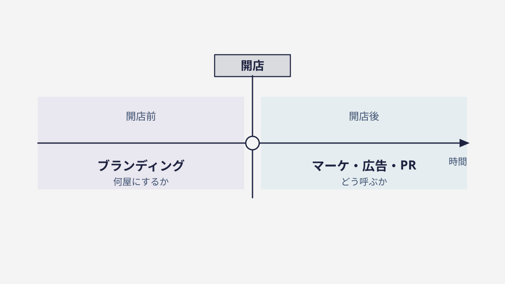

— 01 —レストランで例えると、全部わかる
一軒のレストランで考えてみます。ブランディングは「どんな店であるか」を決めること（例：気取らないけれど本気のイタリアン）。マーケティングは今月お客さんを呼ぶ仕組み（クーポン、SNS、立地の工夫）。広告はそのためのチラシやCM。PRはグルメサイトや新聞に取り上げてもらうこと。
つまり広告・PR・マーケは「お客さんを呼ぶための手段」です。ブランディングはその手前で、「そもそも何屋で、何を約束する店なのか」を決める土台。土台がぶれていると、どれだけ集客を頑張っても、お客さんの中に像が結ばれません。
料理も内装も日替わりでコロコロ変わる店を想像してください。一度は来ても、「あの店は何が売りなの？」と記憶に残らず、リピートされない。逆に「あそこは絶品の生パスタの店」と一言で言える店は、宣伝しなくても人が人を連れてくる。この差を生むのが、手段ではなく土台＝ブランディングです。
順番も違います。ブランディングは開店前に「何屋にするか」を決める仕事。マーケや広告は、開店後に「どう呼ぶか」の仕事です。開店してから「やっぱり何屋にしよう」と迷い始めると、それまでのチラシもクーポンも無駄になる。だから、手段の前に土台を、が鉄則なのです。
— 02 —いちばんの違いは「誰が判断するか」
教科書では「短期のマーケ／長期のブランド」と時間で分けます。でも実務での本当の分かれ目は、判断する人です。マーケや広告は現場が回せる。けれどブランド＝「何を約束し、何を断るか」は、経営が握るべき判断です。
たとえば「安さで勝負するのか、品質で勝負するのか」。これは現場のキャンペーン担当が決められる話ではありません。会社の方向そのものを決める、経営の判断です。ここが曖昧なままだと、現場は毎回バラバラの売り方を発明し、会社の像がにじんでいきます。
「ブランディングを外注して丸投げ」がうまくいかないのも、この判断そのものは外注できないからです。チラシのデザインや広告の運用は任せられても、“うちは何者か”という約束だけは、自分たちで決めるしかない。ここを人任せにした会社は、きれいな制作物は手に入っても、芯が入りません。
— 03 —順番を間違えると、お金が溶ける
約束（ブランド）が決まっていないのに広告を打つと、「何屋か分からない広告」に予算を払うことになります。見た人の記憶にも残らず、費用だけが消えていく。逆に、約束が一行で決まっていれば、同じ広告費でも刺さり方がまるで変わります。
順番はシンプルです。「何を約束するか（ブランド）→ どう届けるか（マーケ・広告・PR）」。土台 → 手段の順を守るだけで、同じ予算でも成果は大きく変わる。焦って手段から入るほど、遠回りになります。
だから、広告代理店に相談する前に、まず自分たちで「うちは誰に、何を約束する会社か」を一行にしてみてください。その一行があるだけで、どんな手段を選ぶべきかの判断が、驚くほど速く、ぶれなくなります。急がば回れ、なのです。

— 04 —明日から、できる一歩
広告や制作物を発注する前に、たった一行でいいので「うちは、誰に、何を約束する会社か」を書いてみてください。これが、どの手段（広告・SNS・PR）に、いくら使うべきかを決める羅針盤になります。
その一行が、今どれくらい伝わっているか——それを確かめる近道が、5問のブランドチェックです。土台（約束）が固まっているかを、まず自分たちで測ってみる。手段に予算を注ぐのは、そのあとでも遅くありません。